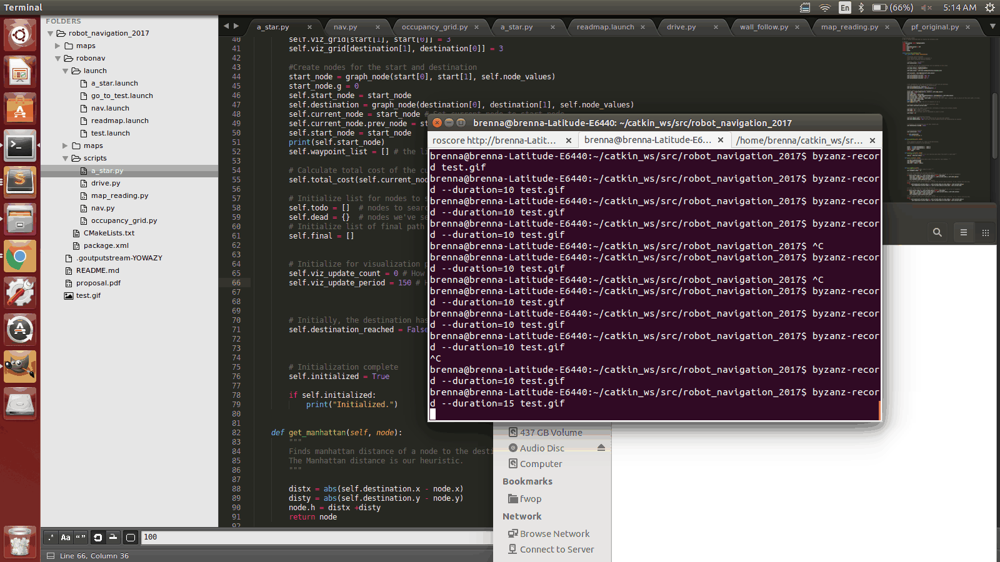

Robot Navigation
Final project for CompRobo Spring 2017
at Olin College of Engineering.
By Paul Krusell & Brenna Manning
A robotics project focused on path planning and how best to determine the optimal route through a space. Given a map of a space and a destination, we will make the Neato navigate to that destination along the most optimal path. This is an example of a behavior that could be useful for robots in many contexts.
Documentation and Project Stories
Artifacts of our project and blog story updates from throughout our process.
Project Proposal
Main Idea
In this project we will investigate robot navigation. We will focus on path planning and how best to determine the optimal route through a space. Given a map of a space and a destination, we will make the Neato navigate to that destination along the most optimal path. This is an example of a behavior that could be useful for robots in many contexts.
Areas of Exploration
We want to explore pathfinding and adaptability. (We would like the neato to adjust its path if it runs into an unexpected obstacle.)
From initial research, we will most likely be focusing on the A* algorithm for pathfinding, but we may explore some of the others listed below.
- Dijkstra’s algorithm
- D*
MVP
A robot that when given a location on a map calculates and then traverses a path to the destination along the shortest possible route.
Stretch Goals
Obstacle Avoidance: A stretch goal we’d especially like to explore is including obstacle avoidance into our pathfinding process. For example, the Neato would calculate and follow it’s path until it reaches an unexpected obstacle. Then it would avoid it and recalculate its path and keep going.
Elevator Neato: This system would include maps of two floors of a building (for example the first and second floor of the Olin College Academic Center), and it would know the location of the elevator. If given a destination on the floor it was not currently on, the neato would navigate to the elevator using one map and then switch maps to navigate around the new floor to reach its final destination. It would wait at the elevator for someone to open the elevator doors.
Traverses path while planning: It would be more efficient for the Neato to compute its path while driving, so we’d like to explore that too.
Risks
Some of the biggest risks we are anticipating are outlined below:
- Underestimating complexity of system.
- Incorporating localization. If the robot’s estimated current location is incorrect, it will not be able to navigate accurately.
- Handling unexpected obstacles. Our system will rely on our map for localization as well as path planning. If there is an obstacle in the environment that was not originally on the map, it could interfere with both of these processes. We will need to come up with a system to handle this situation.
Project Story I
April 18, 2017
We have successfully created a map of the first floor of the academic center. We have learned how to process this map in ROS and get the value of each pixel in the image to determine whether or not it is a free space.
We have just about completed our implementation of the A* algorithm to search through this space to create the best path to the goal destination from a given starting coordinate.
At this point in the project, we have created a successful map of the first floor of the academic center. To do this, we used the built-in ROS gmapping package, and drove the robot around the first floor. Gmapping created the map, and then we used ROS’ Occupancy Grid features to create a graph of occupied and unoccupied spaces on the map.
We then set about implementing our A* search. We started by going through the occupancy field and creating a node object for the starting point. The node object contains the location on the map, whether it’s occupied, unoccupied or unknown, and the g and h costs of the node, its neighbors, and some other values. To get the h, or heuristic cost, we calculated the Manhattan distance from the node to the destination. The g cost was just 1 plus the cost from the start to the node.
That was all in the initial setup. For the actual pathfinding, we first find the neighbors of the current node, turn them into node objects, and add them to a “to do” list. Then we sort the to do list by their total cost, and then search in order of lowest cost to highest cost. That’s where we got to by the time of this post, but we feel very close to finishing the search algorithm and figuring out a good path.
We spent a lot of time achieving a strong comprehensive understanding of the ROS Occupancy Grid and the nuances of the A* algorithm, as we hadn’t explored it in quite some time. We believe it was valuable for us to make this investment early on, and it will help us significantly in the near future.
Project Story II
April 25, 2017
At this point we have completed our implementation of the A* algorithm. We are able to reach the destination node from a given start node following the optimal path, and this path is calculated quickly and efficiently.
We have made progress towards producing effective visuals of nodes being searched and the path as it is being calculated. To do this, we explored matplotlib functions, and how to update graphs in real time in order to show what our algorithm has searched so far.
We unfortunately were not able to dedicate the same number of project-hours the last week as we were the first few weeks and will for the last sprint of the project, but we still made good progress and think we are in a good place moving forward.
Our next step for this final leg of the project is to translate this path into Twist commands, which will be sent to the Neato to make it follow the calculated path to the destination in real life. We have clear goals for the remaining time of this project and are excited to move forward. Our work so far has given us a much deeper understanding of how these path planning algorithms actually work, and we’re excited to now explore and learn about how to control a robot well from a planned path.
We also had an opportunity this past week to present our work so far to the other members of our class. We received some great feedback that is being incorporated into our work. (Downsampling the map, for example.) This presentation was also great practice for explaining our work, telling our story, and creating documentation/project artifacts.
Final
May 5, 2017
What's the big idea?
The focus of this project was on path planning algorithms. Given a map of a space and a goal destination within that space, the neato robot uses the A* graph search algorithm to efficiently plan an optimal path. Then, from this path, a series of waypoints are generated as intermediate goal locations. Using the built in localizer, it is determined what the current location is. Then the neato can drive to each waypoint in order to reach the final destination!
Path planning and navigation are critical elements of robotics. Any robot that drives or moves around could benefit from fast and accurate path planning. What we have created would be most useful for robots in a familiar environment, such as a home or a place where robots do work. Because it is a known location that the robot is working in, it makes sense that a map of that location would exist. However, it does not need to be familiar. All we need is a map of the space! This could be useful for most buildings where floor plans are known.
There are a wide variety of contexts that work like this this could be applied to. These range from everyday situations to helping people avoid dangerous situations. For example, imagine a home companion robot that is called to return to its user. It must navigate through the floorplan of the home avoiding known obstacles it is familiar with to get back to its user as quickly as possible. Additionally, imagine there is a building that is unsafe for humans to enter, but a response team must quickly access a point somewhere within the floor plan to relieve the crisis. If the floorplan is known, a best path could be planned, and the neato could follow that path to the necessary point quickly, and the people on the outside would be able to see its progress from a safe distance as it updates its current position continually.
On the more technical side, the A* algorithm was the perfect algorithm to explore for solving this sort of problem. We now have a much deeper understanding of how this algorithm, and others like it, work and can be applied to solving problems in the real world. This project gave us a fantastic opportunity to learn about path planning and graph traversal. We also had the opportunity to work at implementing these in fairly large spaces, such as the AC hallway and alcoves. Some of these problems seem simple in smaller spaces, but scaling up into a larger and/or more complex space can make it into a much more interesting problem.
System Architecture
Our code was divided across 5 main classes. The first class was the a_star class, and this was in charge of the a_star algorithm, as its name suggests. The a_star class took in a start point and an endpoint, as tuples of pixels. We also used a map_reader function to create a map and the Occupancy Grid function from the robot localization project to turn the values on the map into understandable numpy arrays of values that contained information about the contents of each pixel of the map. We used this occupancy grid to create a bunch of nodes using our Graph Node class. That was all in the initial setup of the a_star algorithm. The last two were drive and nav. Drive was where the work was done to handle driving from one point to another, and nav was where all the other pieces came together. There, the path from a_star was converted to points at real physical distances in space, and the neato drives to each waypoint, localizes, then continues until reaching its destination.
A*
Let's focus on A* for now..
The typical structure of the algorithm is as follows:
- Start with the starting node, and evaluate its manhattan distance to the destination.
- Generate neighbors on all sides of the node, and evaluate the cost to get to the node plus the manhattan distance from each neighbor to the destination.
- From the list of neighbors, pop the node that has the lowest total cost.
- Find all of the neighbors of the new node and add them to the list of nodes to be tested
- Repeat step 3 until you reach a node on the destination, in which case you trace back your path.
One of A*’s greatest benefits is that you can avoid searching some nodes that can’t possibly be faster than others Because you always are looking at the node with the smallest total cost, you can reach your destination without ever looking at nodes with huge costs, or costs higher than the heuristic, because there is no way that they could be faster.
The find_neighbors function generates the neighbors of the current node. It does this by checking to see if the nodes on all sides of the current node are already in the list of nodes to look at. If they are, it compares their current cost with the hypothetical cost of accessing this node from the current node. If the hypothetical cost is faster, this cost becomes the cost of the node and the new previous node of the neighbor becomes the current node.
The other important functions in A* that help us in the future are the backtrack function and the make path function. The backtrack function starts with the destination node and iterates through previous nodes to find the path that the algorithm took to get to the destination. It returns this information as a list. The make path function takes the list from the backtrack function and looks at the coordinates of the node. It compares the difference in coordinates of the node and the node it came from and tries to find patterns. If the difference between two nodes is that same as that of the previous nodes then it continues down the list of nodes until it reaches a different difference. At that point it creates a marker at that point, telling the robot that it’s a straight shot from it’s current location to that point on the map. It then repeats that, creating a list of markers, which we called waypoints, for the robot to use for driving.
Visualizations
While we were working on our implementation of the A* algorithm, we realized how useful it would be to have a visual representation of how the graph was being traversed, and exactly what the algorithm was deciding the best path was. In our implementation, each pixel of the image we use for our map counts as one node of the graph. Depending on the value of that pixel, we determine whether that node is a wall, unknown space, or an open space that the neato can travel to. Our visual graph starts with this map. We highlight the neato’s start and end points on the map. (The neato’s current location and the goal destination.) Then, as the algorithm traverses the graph, we note which nodes(pixels) have been visited by changing their color on the graph. Once the destination is reached through the best path, we highlight the path traveled to reach the destination, and indicate where along the path the generated waypoints are located. You can see an example of one of these visualizations below. Later on, we were also able to include the neato’s current location, so you could see where the neato really was as it attempted to follow the path given by the algorithm. These visualizations are made in matplotlib and update in real time.
Driving
Earlier in this project we created a simple implementation of driving from point to point: given the robot’s current location in meters and a goal location also in meters of the same coordinate frame, the neato turns towards that location and then drives to it. Our implementation of this driving was done successfully using timing. In the future, we would like to modify this to be speed proportional to distance from the goal location, which we believe would get us more accuracy given that the localizer is accurate. Later on, we needed to use the driving class in order to drive to each of the waypoints generated by the algorithm. This time, instead of inputting a start and end position, the start position is the current location as determined by the built in localizer, and the end position is whichever waypoint needs to be driven to next. Unfortunately, we ran into some issues with this integration due to the different coordinate frames. After some tweaking we got the neato to drive to its destination, but not perfectly following the path as expected. If we continue to work on this project, our next step would be investigating further where the source of this error is, though right now we are happy with the results of our algorithm and the rest of our system.
Navigation
The nav.py file contains the bread and butter of our full system. This is when we combine the drive and A* together to create a program that can plan and execute a path to a given target. In order to give our robot a position, we use the built-in ROS AMCL (Adaptive Monte Carlo Localization) particle filter package. An interesting challenge we ran into was trying to keep all of the origins of the different maps identical, as the AMCL returned coordinates in meters and our A* and visualizer used pixels. The solution involved taking the resolution from the map.yaml file and multiplying that by the difference of the origins of the two maps.
We used a simple initialized boolean to prevent functions from running before we had given the system an initial guess at the starting location. This was for the localizer and to make sure that functions requiring current location would not run until there was a location to use.
We intentionally kept nav.py made up of many small functions. Though it did have a main loop, runner(), there were separate functions for coordinate frame conversions, finding the path using the algorithm, updating visuals, driving, and callbacks for updating positions.
Bonus: Incorporating Teleop
While finishing up making the neato drive to a given location on its own, we discovered another use of our algorithm’s results and the visualization that goes along with them. We are able to update the position of the neato in the graph every time the localizer detects that the neato has moved. Because of this, if we remove the instructions to drive to each of the waypoints from the main run loop of nav.py, we are able to drive the neato using teleop control and watch live on the visualization where the neato is relative to the path. This shows how the algorithm could be valuable in showing a best path even if a robot was human controlled. It may not always be intuitive what a good path to follow would be through a more complicated space. Additionally, even if you were not able to see your neato or its camera, you would be able to navigate it quickly to a destination by following the path created by the algorithm.
Demonstration of A* algorithm
- exploring graph nodes
- planning path
- generating waypoints